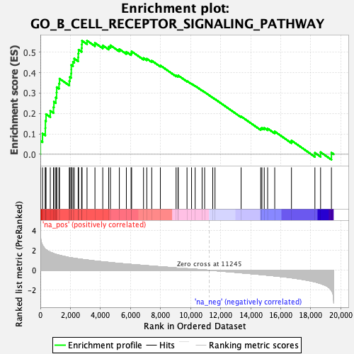
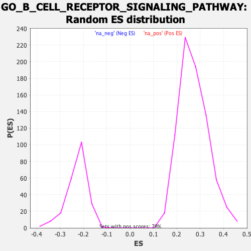

| | | Dataset | Recurrence |
| Phenotype | NoPhenotypeAvailable |
| Upregulated in class | na_pos |
| GeneSet | GO_B_CELL_RECEPTOR_SIGNALING_PATHWAY |
| Enrichment Score (ES) | 0.5571572 |
| Normalized Enrichment Score (NES) | 2.0504403 |
| Nominal p-value | 0.0 |
| FDR q-value | 0.019177975 |
| FWER p-Value | 0.144 |
Table: GSEA Results Summary

Fig 1: Enrichment plot: GO_B_CELL_RECEPTOR_SIGNALING_PATHWAY
Profile of the Running ES Score & Positions of GeneSet Members on the Rank Ordered List
| SYMBOL | RANK IN GENE LIST | RANK METRIC SCORE | RUNNING ES | CORE ENRICHMENT | | 1 | MS4A1 | 4 | 3.912 | 0.0661 | Yes |
| 2 | VAV3 | 144 | 2.520 | 0.1017 | Yes |
| 3 | GCSAM | 330 | 2.124 | 0.1283 | Yes |
| 4 | FOXP1 | 337 | 2.114 | 0.1638 | Yes |
| 5 | PLCG2 | 377 | 2.064 | 0.1968 | Yes |
| 6 | FCGR2B | 661 | 1.822 | 0.2132 | Yes |
| 7 | CD300A | 876 | 1.682 | 0.2307 | Yes |
| 8 | PTPRC | 902 | 1.670 | 0.2577 | Yes |
| 9 | CD22 | 1028 | 1.604 | 0.2785 | Yes |
| 10 | MEF2C | 1080 | 1.580 | 0.3027 | Yes |
| 11 | CTLA4 | 1089 | 1.575 | 0.3290 | Yes |
| 12 | TEC | 1241 | 1.516 | 0.3469 | Yes |
| 13 | LAT2 | 1275 | 1.504 | 0.3708 | Yes |
| 14 | PTPN6 | 1927 | 1.284 | 0.3591 | Yes |
| 15 | BLNK | 1966 | 1.275 | 0.3788 | Yes |
| 16 | IGLL5 | 2047 | 1.253 | 0.3959 | Yes |
| 17 | LPXN | 2060 | 1.250 | 0.4165 | Yes |
| 18 | IGLL1 | 2062 | 1.250 | 0.4376 | Yes |
| 19 | BLK | 2171 | 1.225 | 0.4528 | Yes |
| 20 | NCKAP1L | 2255 | 1.207 | 0.4690 | Yes |
| 21 | ELF1 | 2518 | 1.148 | 0.4751 | Yes |
| 22 | CD79A | 2526 | 1.147 | 0.4942 | Yes |
| 23 | NFATC2 | 2546 | 1.142 | 0.5125 | Yes |
| 24 | BAX | 2749 | 1.098 | 0.5208 | Yes |
| 25 | STAP1 | 2762 | 1.096 | 0.5388 | Yes |
| 26 | BTK | 2772 | 1.093 | 0.5568 | Yes |
| 27 | PIK3CD | 3107 | 1.030 | 0.5572 | Yes |
| 28 | MNDA | 3634 | 0.934 | 0.5460 | No |
| 29 | RFTN1 | 4154 | 0.852 | 0.5338 | No |
| 30 | ITK | 4547 | 0.794 | 0.5271 | No |
| 31 | PRKCH | 4666 | 0.776 | 0.5342 | No |
| 32 | CD19 | 5258 | 0.690 | 0.5155 | No |
| 33 | SYK | 5725 | 0.628 | 0.5022 | No |
| 34 | ELF2 | 6039 | 0.589 | 0.4961 | No |
| 35 | SH2B2 | 6076 | 0.585 | 0.5042 | No |
| 36 | CD38 | 6867 | 0.489 | 0.4719 | No |
| 37 | KLHL6 | 7085 | 0.460 | 0.4686 | No |
| 38 | LCK | 7414 | 0.421 | 0.4589 | No |
| 39 | ABL1 | 7989 | 0.356 | 0.4354 | No |
| 40 | PAX5 | 9035 | 0.244 | 0.3859 | No |
| 41 | MAPK1 | 9164 | 0.229 | 0.3832 | No |
| 42 | CD79B | 9178 | 0.226 | 0.3863 | No |
| 43 | PLEKHA1 | 9762 | 0.164 | 0.3592 | No |
| 44 | LYN | 10064 | 0.132 | 0.3459 | No |
| 45 | NFAM1 | 10304 | 0.104 | 0.3354 | No |
| 46 | PRKCB | 10767 | 0.054 | 0.3126 | No |
| 47 | RUNX1 | 10936 | 0.035 | 0.3046 | No |
| 48 | BCL2 | 11475 | -0.025 | 0.2774 | No |
| 49 | BMX | 11626 | -0.042 | 0.2704 | No |
| 50 | PTPN22 | 13363 | -0.261 | 0.1856 | No |
| 51 | GCSAML | 14669 | -0.431 | 0.1259 | No |
| 52 | SLC39A10 | 14747 | -0.440 | 0.1294 | No |
| 53 | PLCL2 | 14903 | -0.464 | 0.1293 | No |
| 54 | FCRL3 | 15129 | -0.497 | 0.1262 | No |
| 55 | CD81 | 15601 | -0.572 | 0.1117 | No |
| 56 | CMTM3 | 16715 | -0.758 | 0.0674 | No |
| 57 | CBFB | 18275 | -1.168 | 0.0071 | No |
| 58 | BCAR1 | 18653 | -1.329 | 0.0103 | No |
| 59 | GPS2 | 19375 | -2.030 | 0.0077 | No |
Table: GSEA details [plain text format]

Fig 2: GO_B_CELL_RECEPTOR_SIGNALING_PATHWAY: Random ES distribution
Gene set null distribution of ES for GO_B_CELL_RECEPTOR_SIGNALING_PATHWAY